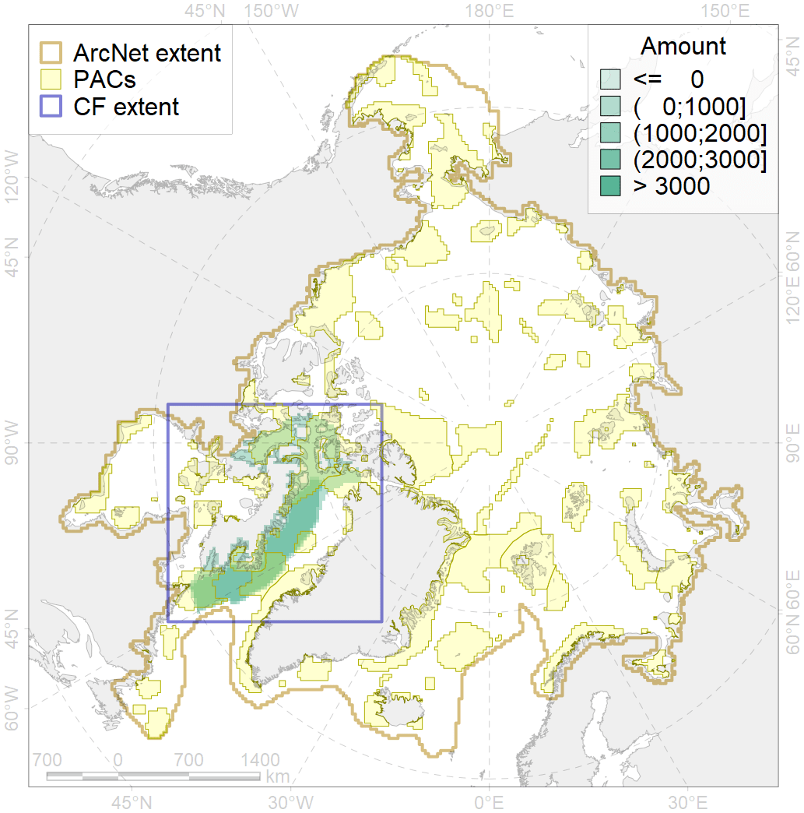
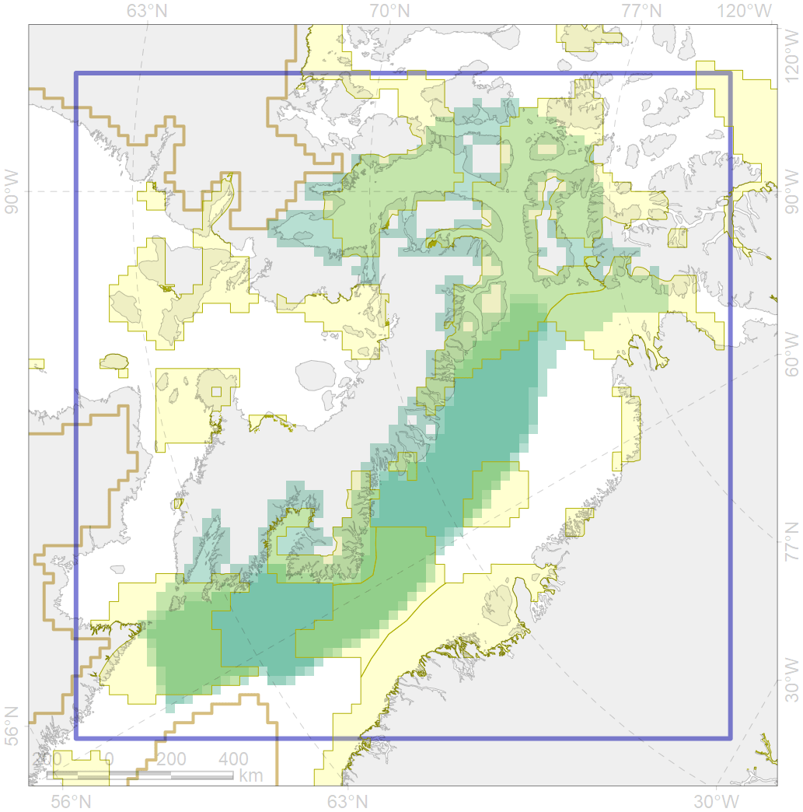

2021

| CF code | 2021 |
| CF name | Harp seal foraging areas in the Baffin Bay region |
| Time Period | 2010 |
| Source(s) | Stephenson and Hartwig, 2010, |
| Seasonality | June-August |
| Depth Horizon | 0-400m |
| Methodology | Data compilation, expert input |
| Use Restrictions | Open source |
| Author Name | Irina Trukhanova |
| Notes | |
| Scenario’s Target | 0.24 |
| Target Achievement | 0.511 (Scenario: 213.0%) |
| PAC | Share of the Total Amount within the PAC | Share of the Target Achievement for the ArcNet | PAC’s Contribution to the Target Achievement |
|---|---|---|---|
| 45 | 14.8%15.4% | 57.6%60.2% | 27.0%28.3% |
| 46 | 3.2%4.4% | 12.3%16.9% | 5.8%7.9% |
| 47 | 2.1% | 8.1% | 3.8% |
| 50 | 0.4% | 1.5% | 0.7% |
| 51 | 2.1%2.6% | 8.7%10.7% | 4.1%5.0% |
| 52 | 12.1%12.5% | 49.1%50.8% | 23.1%23.8% |
| 65 | 4.1%4.2% | 15.8%15.8% | 7.4%7.4% |
| 76 | 12.2%12.2% | 49.6%49.7% | 23.3%23.3% |
| inner | 51.0%53.8% | 202.7%213.7% | 95.2%100.4% |
| outer | 49.0%50.5% | 10.2%15.8% | 4.8%7.4% |
| † supplement values are for area consistence whereas principal values are for Accenter compatible gridded stats |